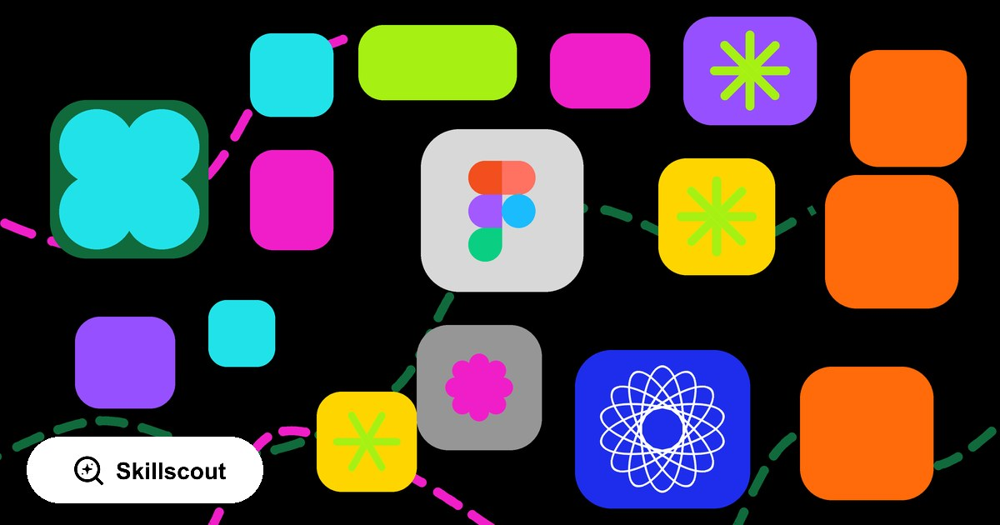

Guides
Figma now has its own catalog of AI skills
You can publish and use ready-made AI skills in the Figma Community. They are markdown instructions for the Figma agent that run as separate, self-contained workflows.

Skills are reusable instructions for the Figma agent. Figma describes them as markdown files that capture a specific process, a set of rules, or a designer's personal approach. The full catalog lives at figma.com/community/ai-skills.
What a Figma skill actually is
A skill is a single markdown file written against the
Agent Skills specification
— the same open format Claude, Codex, and other agents read. It has a name, a description,
and a body of instructions. The name becomes the slash command you type in chat, so a skill
called Better Interface runs as /better-interface.
A few practical details from Figma's help center:
- You can create a skill three ways: ask the agent to write one, upload an existing
.mdfile, or write it by hand. - It has to be a single markdown file. The optional
scripts/,references/, andassets/directories from the broader spec are not supported. - Skills work with the Figma agent in both Figma Design and Figma Make files.
- You can publish privately to a team or organization, or publicly to the Community — then edit, version, export, disable, unpublish, or delete.
- The design agent is in open beta, available to Full seat users on Professional, Organization, and Enterprise plans, and free during the beta.
Figma marked the launch with a post, Try These 10 Skills — And Show Off Your Own, on August 13, 2026. There is also a community-maintained repo at figma/community-resources covering accessibility audits, token export, FigJam generation, and localization. Those are not endorsed by Figma, so review them before running — the same care any third-party skill deserves, as covered in our guide on AI agent skills security.
Five Figma skills worth trying
Better Interface
/better-interfaceReviews an interface across a whole set of dimensions: typography, layout, accessibility, motion, and copy. A good option when a screen already looks fine but you want to catch the small problems that quietly drag the whole thing down.
Find Animation Opportunities
/find-animation-opportunitiesFinds the places where an interface is genuinely missing movement. It suggests what to animate, exactly where, and with what values. You can also run it in reverse: ask it to find the animations that should not be there.
UI State Expander
/ui-state-expanderExtremely useful for screens that only exist in their happy path. It takes a screen, component, or flow and helps you think through the rest of the states, then fills in the copy, transitions, and implementation notes.
- loading
- empty
- error
- disabled
- partial data
- edge cases
Superfuture Design Review
/superfuture-design-reviewEffectively a second design reviewer. It checks UX, accessibility, visual hierarchy, interactions, and product logic, then sorts the findings on a traffic-light system: critical problems, recommended changes, and what already works well.
Component Handoff
/component-handoffTakes a component or a set of components and assembles the documentation for handoff: description, preview, variants, states, component anatomy, and do/don't usage examples — packaged so you can adapt the structure to your own design system.
Also worth a look from the launch list: Create Color by Ian Guisard (Uber), which maps fills, strokes, and shadows to design tokens and flags hard-coded values; Analyze Components by Amy Ha (Walmart); and Usability Test Guide by Neha Kodi (Figma).
The other half: Figma's own official skills
The Community catalog is designer-facing — skills you run inside a Figma file. Separately, Figma publishes its own official skills aimed at the code side of the workflow: teaching a coding agent to drive Figma through the MCP server, generate designs from an existing codebase, or wire components to their implementations.
There are 35 official Figma skills across two repositories —
figma/mcp-server-guide (28 skills) and figma/skills (7) — with
roughly 43,900 installs and 3,800 GitHub stars between them. The full list, with install
counts and install commands, is in the
Figma official skills directory on Skillscout.
- figma-use — a prerequisite skill loaded before any
use_figmatool call. Effectively the entry point for everything else. - figma-generate-design — translates pages of an existing application into Figma screens using your design system components.
- figma-generate-library — builds or updates a design system through a structured sequence.
- figma-code-connect — connects design components to their code implementations.
- figma-create-new-file and figma-generate-diagram — blank Figma and FigJam files, and diagram generation.
The rest cover FigJam, Slides, SwiftUI, motion implementation, and design-to-code. Install a whole package with one command:
npx skills add figma/mcp-server-guide -ySo there are two layers worth knowing about. Community skills encode a designer's process; Figma's official skills encode how agents talk to Figma. Most teams end up wanting both.
Why this matters
Figma Community used to be a place to save other people's templates, UI kits, components, and plugins. Now you can save someone else's process.
A designer can take their own interface review checklist, their approach to motion, the way they handle states, or their design review rubric — write it up as a skill and publish it for everyone else. And because skills are just markdown, with no plugin code required, the barrier to authoring one is roughly "can you write down how you work." You can create and edit your own skill directly inside the Figma agent.
It is also one more sign of where the format is heading. Design tools, coding tools, and chat products are converging on the same markdown standard, which is the argument we made in Are AI agent skills here to stay?
How to publish your own skill
Publishing runs entirely inside Figma — no repo, no plugin submission. The help center article has the full reference; the short version is three steps.
1. Create the skill. In chat, open the prompt box and pick Skills → Add skill. From there you can:
- Ask the agent to write one — describe the workflow and let it draft the instructions.
- Upload an existing
.mdfile that follows the Agent Skills spec. - Choose Start from scratch and enter a name, description, and instructions by hand, then click Add.
The name becomes the slash command, so keep it short and verb-like. If you already keep a skill library for Claude or Codex, the same markdown file works here — see how to organize agent skills for keeping one source of truth across agents.
2. Open the publish flow. Go to Add context → Skills → Manage skills, select your skill, then More actions → Publish.
3. Pick where it goes. Under Publish to:
- Private — publish to a team or organization. The file you publish from has to live in that team.
- Community — publish publicly. Figma asks for a thumbnail and up to nine images (1920 × 1080 recommended), a name, tagline, description, and category, plus a support email or website. Additional contributors need their own Community account.
Hit Publish and it appears in the AI skills library. To ship an update later, go back to Manage skills → More actions → Manage skill → Publish changes. Unpublish skill in the same menu pulls it from the Community but keeps it working for you.
One thing worth doing after you publish: list the skill on Skillscout. It is the kind of thing people should find while they are actually in Figma — not three weeks later.
Finding skills beyond Figma
The same format is spreading fast, and skills now live scattered across half a dozen directories. The Skillscout Chrome extension handles the discovery half. It reads the site you are currently on, derives a keyword from the hostname and page context, and surfaces matching agent skills ranked by relevance, popularity, and trust signals — no tab-switching, no searching every catalog by hand.
It looks for the vendor's own official skills first, then for community skills across
skills.sh,
ClawHub,
Skill.fish,
MCPMarket,
and other marketplaces. On a Figma page, that means the official
Figma skills come up before anything else — the 35 skills
from figma/mcp-server-guide and figma/skills, with install counts
and a one-line install command each.